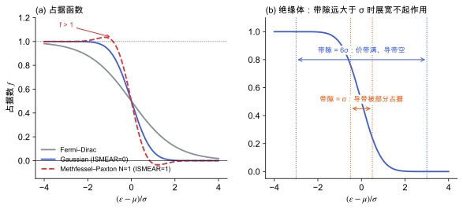

电子占据与展宽
解释 ISMEAR 和 SIGMA 在做什么：布里渊区积分里怎样给能带分配占据数，为什么绝缘的分子晶体用 Gaussian 展宽、小 SIGMA 就够，什么时候展宽会带来误差。
直观阅读需要
- 倒空间、布里渊区与 k 点采样 里的 k 点求和
- 费米能级的概念
完整推导还需要
只是提示，不需要先读完才能往下看。
直觉直观解释
电子密度和总能都要对布里渊区里所有占据态求和。绝缘体的占据数在每个 k 点上要么是 1（价带）要么是 0（导带），求和很容易收敛。金属的费米面穿过布里渊区，占据数在费米面上从 1 跳到 0，有限的 k 点网格很难采样这个台阶。
展宽 (smearing) 的办法是把台阶换成光滑的函数，宽度由 \sigma 控制。光滑之后少量 k 点就能积分，代价是能量里混进一项与 \sigma 有关的误差。另一条路是四面体方法 (tetrahedron method)，在 k 点之间对能带做线性插值，不引入展宽参数 [Blöchl, Jepsen & Andersen 1994]。
对有带隙的分子晶体，费米能级落在带隙里。只要带隙比 \sigma 大得多，任何合理的展宽都给出 1 和 0，结果与不展宽一样。所以分子晶体计算里 ISMEAR = 0 配小 SIGMA 是个安全的默认，而不是一个需要调的物理参数。

| 符号 | 是什么 | 图里对应 |
|---|---|---|
| \varepsilon | 某个 Kohn–Sham 本征值 | 横轴（以 \sigma 为单位） |
| \mu | 费米能级（化学势），由总电子数确定 | 横轴零点 |
| \sigma | 展宽宽度，VASP 里的 SIGMA | 横轴单位 |
| f | 该本征态的占据数 | 纵轴 |
| 带隙 | 价带顶到导带底的距离 | (b) 里两组竖虚线之间的距离 |
定义与公式数学与推导
总能和电子密度里的布里渊区积分写成 k 点加权求和：
其中 w_{\mathbf k} 是 k 点权重；n 是能带指标；f 是占据函数；\mu 由第二式（总电子数 N_{\mathrm e} 守恒）确定。
三种常用的 f（记 x = (\varepsilon-\mu)/\sigma）：
其中 f_{\mathrm{FD}} 是 Fermi–Dirac 分布，\sigma 对应电子温度 k_{\mathrm B}T_{\mathrm e}；f_{\mathrm G} 是 Gaussian 展宽；f_{\mathrm{MP1}} 是一阶 Methfessel–Paxton 展宽，它在 Gaussian 上加了一项 Hermite 多项式修正，使总能对 \sigma 的依赖更弱，但 f 可以超过 1 或小于 0 [Methfessel & Paxton 1989]。
在本研究线里的样子对应与边界
- VASP：
ISMEAR = 0是 Gaussian，ISMEAR = N > 0是 N 阶 Methfessel–Paxton，ISMEAR = -1是 Fermi–Dirac，ISMEAR = -5是带 Blöchl 修正的四面体方法 [VASP Wiki: ISMEAR]。 - 分子晶体：PBE 带隙一般有几个 eV，远大于常用的
SIGMA（百分之几 eV）。只要带隙不是很小，展宽对能量、结构和响应都没有可见影响。检查方法：OUTCAR 里entropy T*S一项应接近零。 - 线性响应：DFPT 和 Berry 相极化都假设体系是绝缘体，占据数严格是 0 或 1。若某个结构（例如自由基、质子错位后的电荷转移态）带隙闭合，这两类计算本身就不再成立，问题不在展宽。
常见坑对应与边界
- 对绝缘体用 Methfessel–Paxton：
ISMEAR > 0给绝缘体时，占据数在带隙两侧可能出现非物理的分数，甚至负值，能量可能出错。 - SIGMA 太大：\sigma 接近带隙时导带被部分占据，等于人为把体系变成金属。
- 比较不同 SIGMA 的能量：多晶型能量差只有 kJ/mol 量级时，比较的两个计算要用相同的展宽设置，并比较 \sigma \to 0 外推的能量。
检验自己对应与边界
参考资料
论文Methfessel & Paxton 1989
尚未实际查阅，目前只是拟查阅书目
论文Blöchl, Jepsen & Andersen 1994
尚未实际查阅，目前只是拟查阅书目
论文Mermin 1965
尚未实际查阅，目前只是拟查阅书目
官方文档VASP Wiki: ISMEAR
VASP Wiki, ISMEAR（占据函数与展宽方法的选择）
尚未实际查阅，目前只是拟查阅书目
教材Martin 2020
尚未实际查阅，目前只是拟查阅书目
分类晶体与固体 · 方法 · 研究线：压电与响应计算 · 状态：草稿